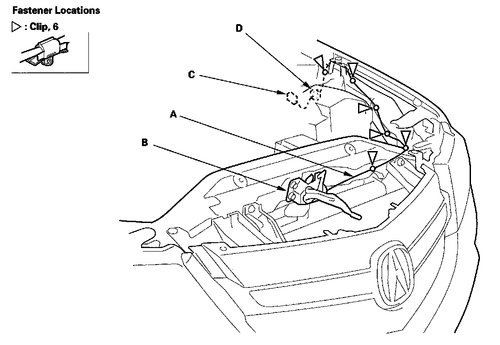

Hood Latch Release Cable: Service and Repair
Hood Opener Cable ReplacementNOTE:
- Put on gloves to protect your hands.
- Take care not to scratch the body and related parts.
1. Remove these items:
- Front bulkhead cover
- Front inner fender, left side as needed
- Driver's dashboard undercover
- Kick panel, driver's side

2. Disconnect the hood opener cable (A) from the hood latch (B).
3. Remove the hood release handle (C), and disconnect the hood opener cable.
4. Using a clip remover, detach the clips, and remove the grommet (D) from the body, then remove the hood opener cable from the vehicle. Take care not to kink the cable.
5. Install the cable in the reverse order of removal.
NOTE: If the clips are damaged or stress-whitened, replace them with new ones.